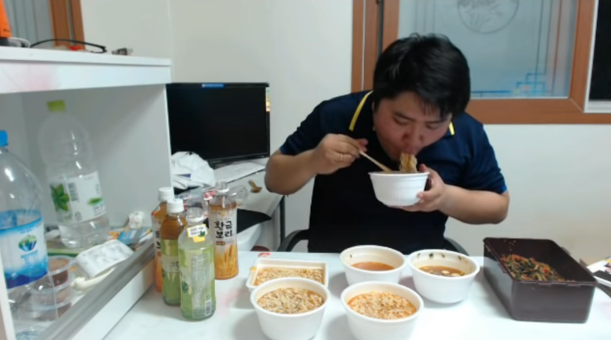
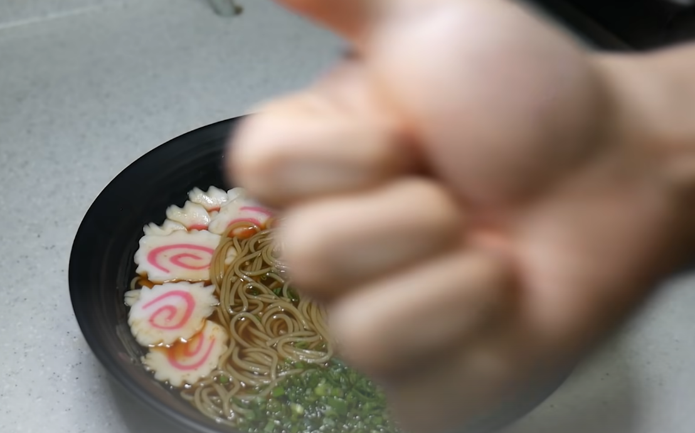
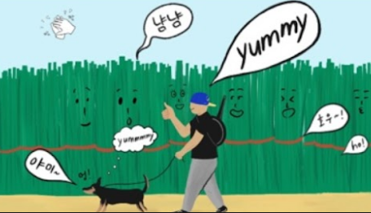

골드쿠폰
왜 보는지 모르겠는 스피드 먹방. 맛있게 먹는것도 아니다, 그냥 빨리 먹고 솔직히 조금 더럽다. 그런데 먹방을 보고 만족하는게 아니라 먹방을 보고 불만족스러워서 이 영상을 보면서 물을 끓이고 있는 자신을 발견할 수 있다.
추천영상 보러 가기


무쇠맨
그의 요리는 빠르다, 아니 사실 편집이 빠르다. 사실 엄청 열심히 요리를 만드는데 그의 가벼운 편집은 마치 한국인이 좋아하는 속도. 중간에 나오는 그의 강아지가 너무 귀여워서 재밌고, 또 그의 요리 퀄리티에 한 번 더 놀라게 된다. 나중에 나오는 박수와 호우 리액션이 별미.
추천영상 보러 가기